Promociones que sí cobran
Descuento por porcentaje, por pesos, 2x1, 3x2 y segundo a mitad. Se preparan como borrador y solo cobran cuando alguien las activa.
Doce puntos, todos aplicados. El de fondo: el punto de venta calcula promociones —por porcentaje, por pesos, 2x1 y 3x2— y las imprime desglosadas en el ticket. Junto a eso, el supervisor ya puede arquear sin cerrar la caja, y los nueve puestos de su documento de perfiles existen en el sistema con sus permisos y sus pendientes escritos.
Todos quedaron aplicados sobre el sistema en operación, del 8 al 14 de septiembre. Abajo el resumen de cada uno; más adelante los detallamos con capturas de su instalación.
Descuento por porcentaje, por pesos, 2x1, 3x2 y segundo a mitad. Se preparan como borrador y solo cobran cuando alguien las activa.
El supervisor entra con su NIP, cuenta pesos y dólares y deja el conteo firmado. La caja sigue abierta y el turno no se interrumpe.
Matriz ve en un solo tablero qué cajas quedaron con faltante o sobrante, quién contó y quién autorizó, sin mezclarlo con el corte final.
Un producto, todas las sucursales, lado a lado. Qué se vendió más y qué menos, en piezas, en kilos o en pesos, con el periodo que se elija.
El mismo cuadro del menú busca en el catálogo completo. Se teclea el nombre de un artículo y aparece, sin entrar a Productos.
Los perfiles de su PDF —Cajer@, Gerente, Compras, Almacenista, Contabilidad, Inventario— ya se eligen al dar de alta a una persona.
Se pide a cajeros y supervisores de caja, que son quienes cobran y autorizan. Al almacenista o a compras ya no se les exige.
Buscar por nombre, correo, puesto o sucursal, y combinarlo con estado y orden. Con ocho usuarios ayuda; con ochenta, es indispensable.
El cajero ya no teclea con cuánto abre: el importe viene de Configuración, igual para todas las cajas.
Un día, todas las sucursales, en una hoja: ventas, notas, retiros, abonos, devoluciones y cierres. Con o sin notas de venta.
Al capturar lo que llegó, el sistema dice de inmediato cuánto falta o cuánto sobra contra lo ordenado, y deja anotar por qué.
Al confirmar el cobro el ticket se imprime sin pasos extra. Y las cotizaciones de timbrado ya son precios publicados, no estimaciones.
Es la capacidad que faltaba para trabajar el precio: hasta esta semana, un descuento solo existía si alguien lo capturaba a mano en cada venta.
Lo que pasaba
Para hacer una oferta había que cambiar el precio del producto en el catálogo, esperar el fin de semana y volver a cambiarlo el lunes. Si alguien se olvidaba, la tienda seguía vendiendo barato.
Un 2x1 sencillamente no se podía: el sistema no sabía contar dos piezas y regalar una. El cajero terminaba escribiendo el descuento a ojo, y esa venta ya no se podía auditar.
Lo que pasa ahora
La promoción se arma con fechas, sucursales y productos, y se guarda como borrador. No cobra nada hasta que alguien la marca como activa, y deja de cobrar sola el día que vence.
En caja el descuento se calcula solo, aparece en su propia columna y se imprime en el ticket con el nombre de la promoción. Queda registro de qué oferta hizo el descuento, no solo de que el total bajó.
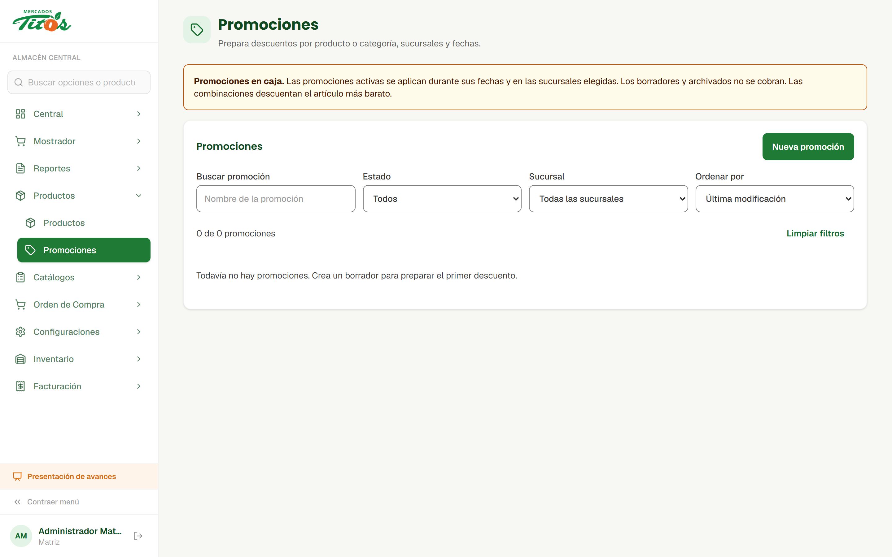
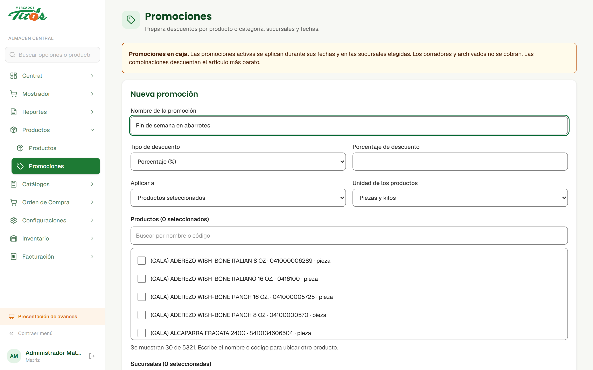
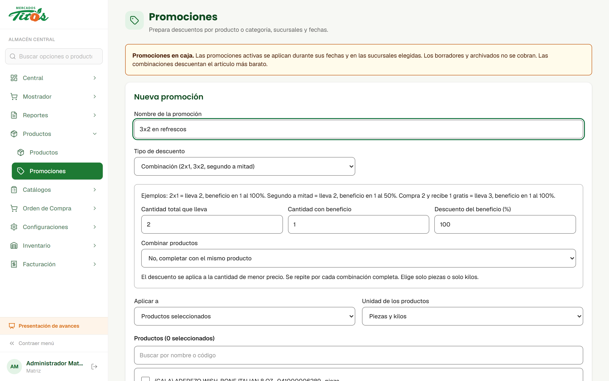
Antes de cobrar, el punto de venta vuelve a preguntar las promociones vigentes. Si cambiaron entre que se armó el carrito y que se cobró, avisa y pide confirmar el nuevo total en vez de cobrar un precio viejo.
Si la caja no puede confirmar las promociones, no cobra adivinando. Es la misma lógica de siempre: mejor detenerse un segundo que dejar una venta con un descuento que nadie puede explicar después.
Se puede dejar preparada la promoción del Buen Fin con semanas de anticipación. Mientras esté en borrador o archivada, la caja la ignora por completo.
El arqueo es una revisión intermedia: sirve para detectar un faltante cuando todavía se puede preguntar qué pasó, no al día siguiente.
Lo que pasaba
La única forma de saber cuánto debía haber en el cajón era cerrar la caja. Eso corta el turno, obliga a abrir otra sesión y parte el corte del día en dos.
En la práctica nadie revisaba a medio turno. El descuadre aparecía en el cierre, con el cajero ya de salida y la mitad del día imposible de reconstruir.
Lo que pasa ahora
El supervisor abre el arqueo desde el punto de venta, se identifica con su NIP personal y el sistema le muestra cuánto debería haber, en pesos y en dólares.
Captura lo que contó, anota lo que quiera y guarda. La caja no se cierra ni se modifica: el arqueo queda como un registro aparte, con su nombre y su hora.
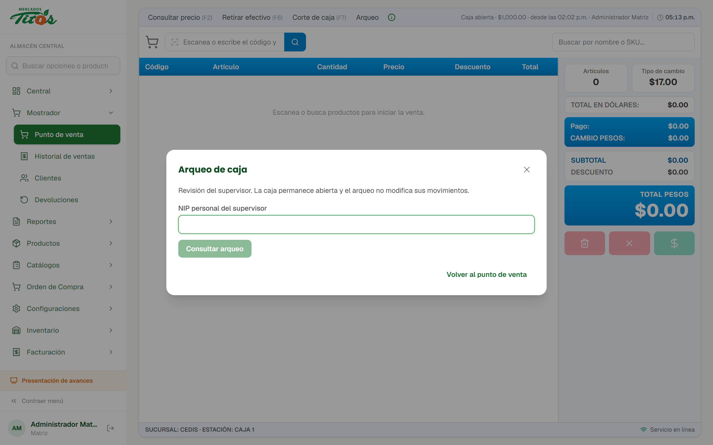

La comparación por producto entre sucursales, con el nombre que ustedes usan: Kardex Global.

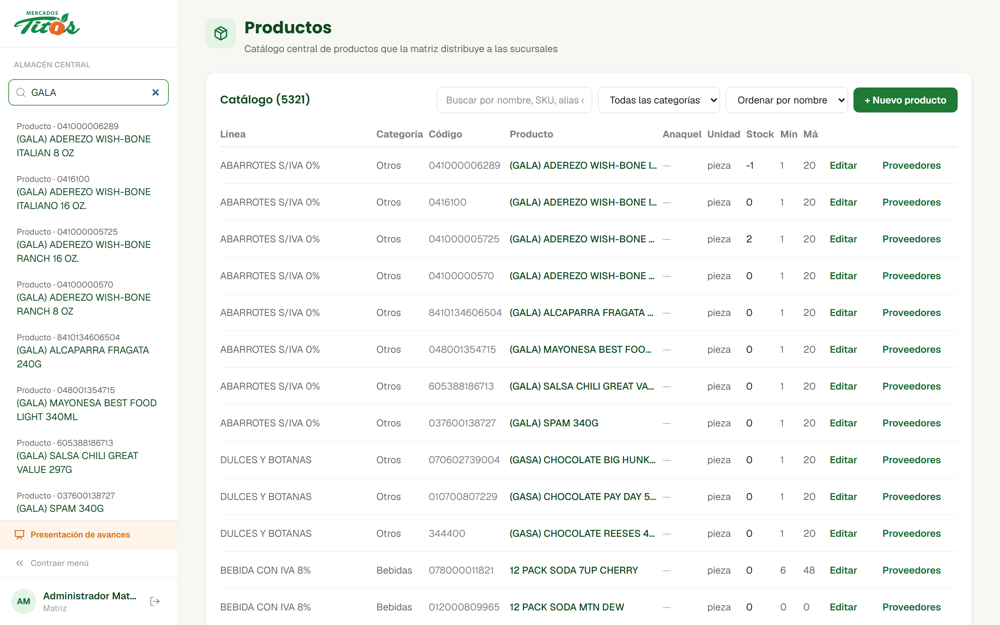
Tomamos el PDF de permisos de perfiles que nos compartieron y lo convertimos en puestos asignables, respetando lo que el documento dice y marcando lo que todavía no cubre.
Las nueve páginas, casilla por casilla, tal como están. Donde el PDF es ambiguo —un grupo cerrado, una casilla padre vacía con hijos marcados— se anotó la duda en vez de resolverla por nuestra cuenta.
Cada puesto recibe los permisos que el sistema sí sabe aplicar hoy. Ni uno de más: el nombre "Compras" no le abre por sí solo funciones que la página 6 no muestra marcadas.
Cada puesto lleva su lista de funciones pendientes, visible al asignarlo. Nadie da por hecho un permiso que todavía no existe.
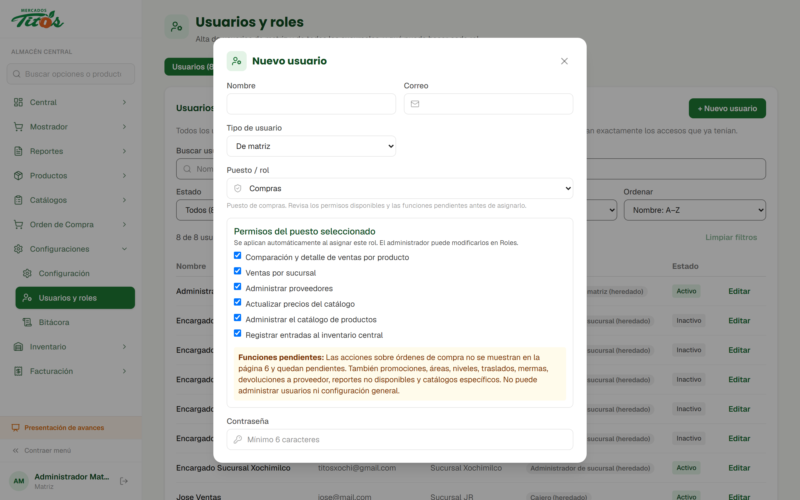
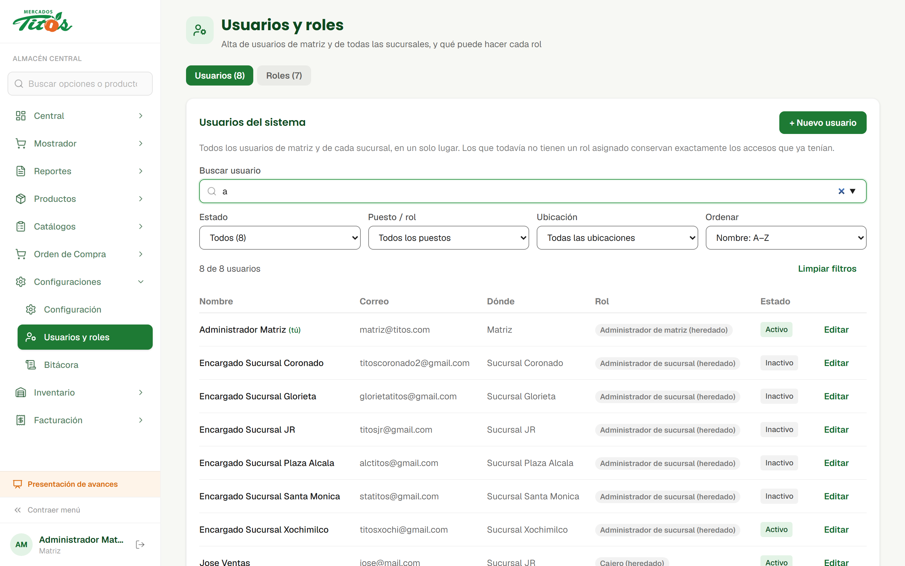
Cajeros y supervisores de caja llevan NIP de seis dígitos, porque cobran y autorizan. A un almacenista o a contabilidad ya no se les exige uno que nunca iban a usar.
El sistema lo verifica al asignarlo y lo rechaza si ya está en uso. Un NIP repetido haría imposible saber quién autorizó una cancelación, que es justo para lo que sirve.
Se agregó una pantalla "Mis accesos" donde cualquier usuario consulta los módulos de su puesto y las funciones que su perfil todavía no cubre, sin tener que preguntarle a administración.
Dos cambios distintos que atacan el mismo problema: que los números del día cuadren sin depender de la memoria de nadie.
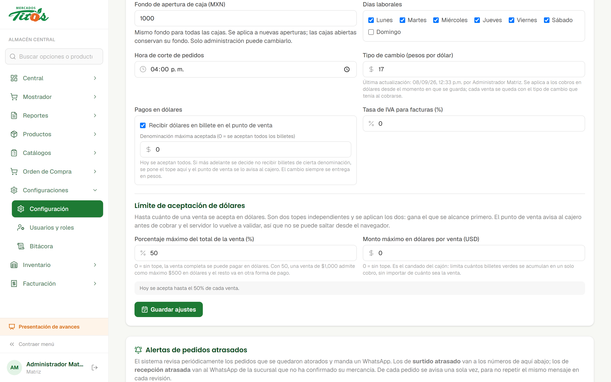
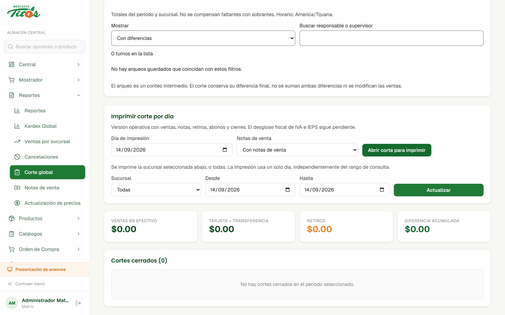
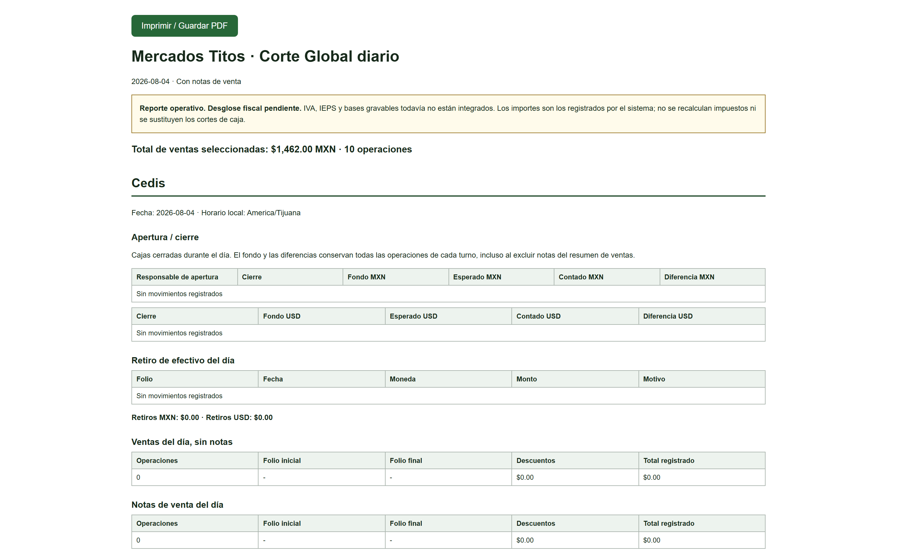
Quien recibe tiene la mercancía enfrente. Ese es el único momento en que se puede reclamar al proveedor con el camión todavía en la puerta.
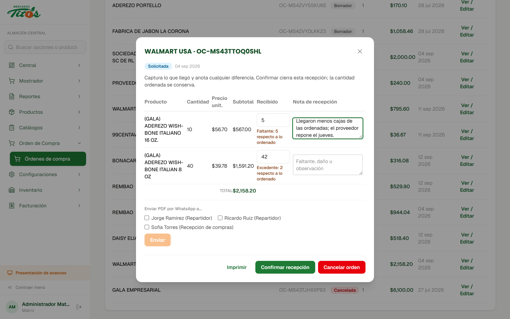
Tanto al recibir una orden de compra en matriz como al recibir un pedido en sucursal. Es la misma advertencia en los dos lados, para que nadie tenga que aprender dos formas de hacer lo mismo.
Se corrigió el punto en que el navegador bloqueaba la ventana del ticket cuando la venta tardaba en responder. Ahora la ventana se reserva en el momento del clic y el ticket se imprime sin pasos adicionales.
Timbrar ante el SAT exige dos cosas que no dependen del código: que cada producto tenga su régimen de impuestos y que haya un proveedor contratado. Avanzamos en las dos.
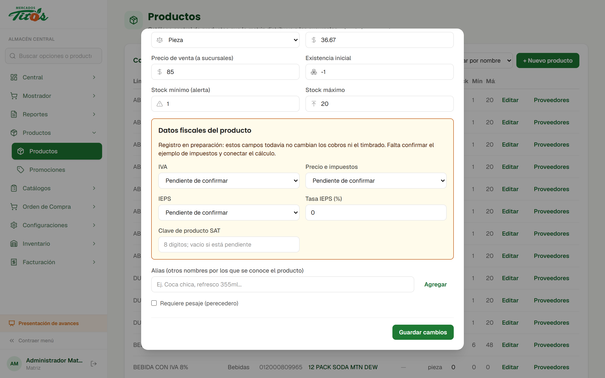
| Facturas por mes | Facturama, primer año | Facturapi, al año |
|---|---|---|
| 100 | $2,200 | $4,308 |
| 500 | $4,600 | $7,188 |
| 2,000 | $13,600 | $17,988 |
Lo que teníamos eran rangos de mercado ("entre $0.50 y $2.50 por timbre"). Ahora son las tarifas publicadas por los dos proveedores, con la fórmula del cálculo escrita en la documentación para que cualquiera la pueda rehacer.
Facturama separa su servicio para un RFC del multiemisor; Facturapi anuncia el suyo como multi organización. Antes de contratar hay que confirmar con cada uno qué cubre para los RFC de Mercados Titos.
Entrar una vez a Usuarios y roles para que se creen los puestos nuevos, y capturar en Configuración el fondo de apertura de caja que aplicará a todas las tiendas.
Los perfiles con los que venían operando se conservan para los usuarios que ya los tenían y para el historial; simplemente dejan de ofrecerse en las asignaciones nuevas. Nadie pierde accesos por este cambio.
Todo lo de esta semana está sobre el sistema en operación.
Las capturas de esta presentación son de su instalación real, no de un demo.